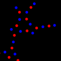
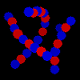
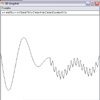
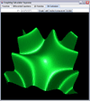
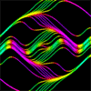
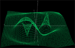
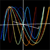

LiquidMath - an open
source project which contains a pure Java math expression parsing
library and minimalistic 3D rendering library. It is planned to become
an interactive 3D graphing calculator.
LiquidMath - an open
source project which contains a pure Java math expression parsing
library and minimalistic 3D rendering library. It is planned to become
an interactive 3D graphing calculator.Software
of Curran Kelleher
LiquidMath - an open
source project which contains a pure Java math expression parsing
library and minimalistic 3D rendering library. It is planned to become
an interactive 3D graphing calculator.
 Gödel, Escher, Bach Course Material and Programming
Examples: PDF
Document,
Accompanying Java Code, and ContextFree
Examples (these are also in Wikipedia) - Justin Curry and I co-taught a course
centered on Gödel, Escher, Bach at MIT in summer 2007
Gödel, Escher, Bach Course Material and Programming
Examples: PDF
Document,
Accompanying Java Code, and ContextFree
Examples (these are also in Wikipedia) - Justin Curry and I co-taught a course
centered on Gödel, Escher, Bach at MIT in summer 2007
 JyVis - an open
source visualization platform which can
integrate visualization tools written in Jython (Java interpreted
Python) or Groovy (a Java-based
scripting language) on the fly
JyVis - an open
source visualization platform which can
integrate visualization tools written in Jython (Java interpreted
Python) or Groovy (a Java-based
scripting language) on the fly
CurranPhysics - an applet published on the New England Complex Systems website which shows emergent behavior in a simple particle system.
CurranPhysics3D - 1/25/07 - A rough simulation of particles interacting with various forces. The forces are editable.
2D Grapher - 12/09/06 - A simple 2D cartesian grapher which supports animation, user variables, sequential statements, conditional operations, and boolean algebra.
 Cellular
Automata - Voting patterns - 1/20/06 - interactive cellular
automata simulating voting patterns.
Cellular
Automata - Voting patterns - 1/20/06 - interactive cellular
automata simulating voting patterns.
 Graphing Calculator Supreme - 7/14/05 - aid in teaching and learning fundamental mathematical concepts through interactive visualization. I suppose one would call it version "alpha"
 Java
3D Engine - 6/19/05 - a set of 3D classes that can be used to
create and view simple 3D objects
Java
3D Engine - 6/19/05 - a set of 3D classes that can be used to
create and view simple 3D objects
 Fractals - 5/30/05
- Mandlebrot set type
fractals and tree fractals
Fractals - 5/30/05
- Mandlebrot set type
fractals and tree fractals
Differential equation solver: 40 solutions - 5/18/05 draws 40 solutions to a moving differential equation (dy/dx = f(x,y,t)) simultaneously, colors them depending on their slope, and fades a slope field of the equation in and out.
4D Cartesian Graphs - 5/17/05 - Z = f(X,Y,Time), creates a moving 3D surface
3D Parametric Graph - 5/17/05 - X,Y, and Z all in terms of time, creates a 3D curve, no surface
z = sin(xy/10)

Any questions? comments? suggestions? ideas? feel free to email me curran.kelleher@gmail.com